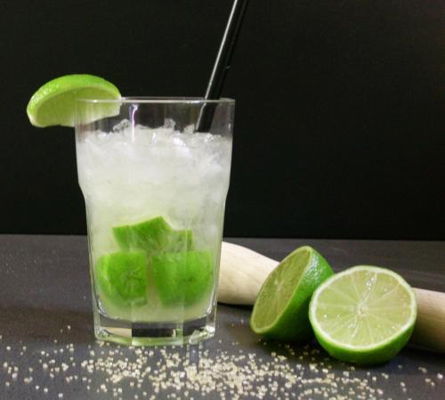

 Caipirinha Sabor Limão Receita de: All Recipes 4+ serve 15 min 15 min Ingredientes 1 Limão Taiti 2 Colheres (de sobremesa) de açúcar 2 Cubos de Gelo Cachaça Para a decoração: 1 Limão Taiti Modo de preparo Corte as pontas do limão Corte o limão ao meio Faça um corte em V e retire a parte central, pois ela faz a caipirinha adquirir um sabor amargo Corte o limão em pedaços menores Misture o limão e o açúcar em um copo e amasse suavemente a mistura com um pilão, acrescente o gelo e complete com a cachaça Dicas A caipirinha tradicional é muito simples de fazer e em poucos minutos você poderá preparar o drink mais famoso do Brasil. AGORA É SÓ BEBER FICAR DOIDÃO.
Receita de: All Recipes